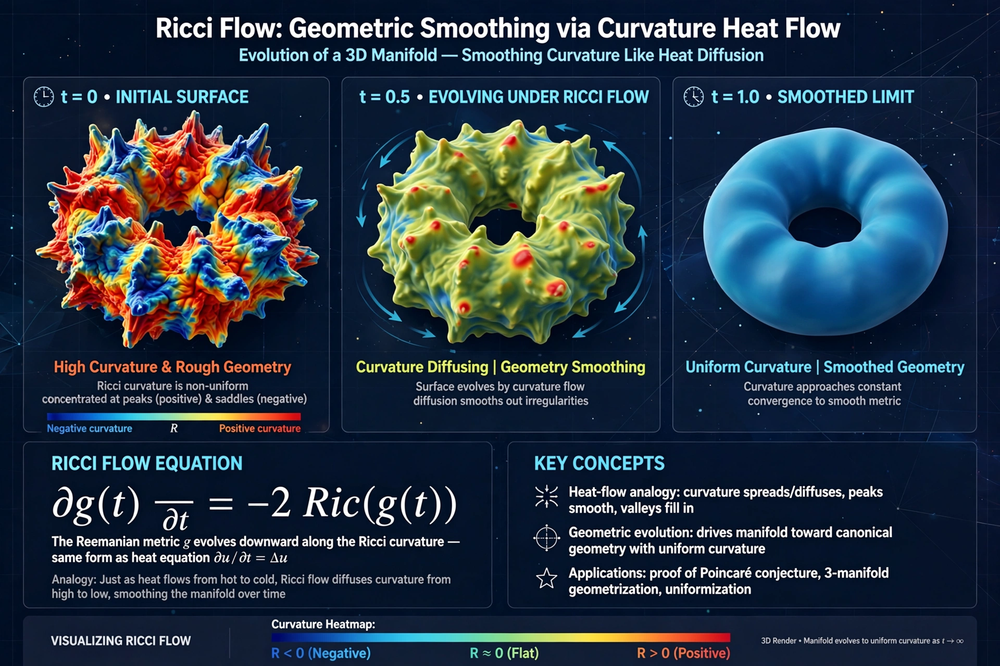

In differential geometry, the Ricci flow is a geometric flow — a process that deforms the metric of a Riemannian manifold analogously to heat diffusion — introduced by Richard S. Hamilton in 1982. The flow is governed by the partial differential equation ∂g/∂t = −2 Ric(g), where Ric is the Ricci curvature tensor, tending to smooth out irregularities in curvature.

| Field | Differential geometry |
|---|---|
| Introduced | 1982, Richard Hamilton |
| Key use | Proof of Poincaré conjecture |
Grigori Perelman used Ricci flow with surgery in 2002–03 to prove Thurston's geometrisation conjecture and thus the Poincaré conjecture, one of the Millennium Prize Problems. Perelman declined both the Fields Medal (2006) and the Millennium Prize (2010).
Flow can develop singularities (e.g., neck pinches) requiring surgical removal and restart — central to Perelman's technique.